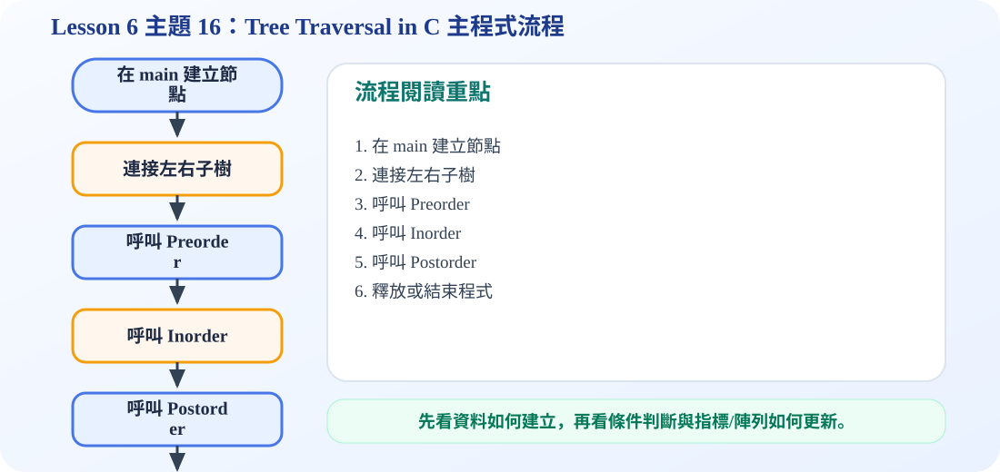

走訪順序動畫流程
Inorder：Left → Root → Right
Postorder：Left → Right → Root
一、inOrder() 怎麼看？
inOrder 的順序是 LVR：Left、Visit、Right。也就是先遞迴走左子樹，左邊走完才印出目前節點，最後再走右子樹。
二、postOrder() 怎麼看？
postOrder 的順序是 LRV：Left、Right、Visit。也就是左右子樹都處理完，最後才印出目前 root。這種順序很適合刪除整棵樹，因為要先處理孩子，再處理父節點。
三、main() 如何把節點接成樹？
main() 會先 createNode 建立 A、B、C、D、E、F，接著用 root->left、root->right 等指標指定節點關係。這些指標一接起來，原本分散的節點就形成一棵 binary tree。
四、考試最重要判斷方式
看到 traversal 題目時，先畫出樹，再用 L、V、R 三個字母判斷順序：inorder 是 LVR，preorder 是 VLR，postorder 是 LRV。不要只背輸出，要能照樹一步一步走。
C 程式碼：完整 Tree Traversal
/*
中文註解版程式：tree_traversal_c.c
說明：主題 15/16：樹節點建立與走訪示範。建立二元樹後輸出 inorder 與 postorder。
閱讀方式：先看資料結構定義，再看操作函式，最後看 main() 如何測試。
*/
// 匯入標準輸入輸出函式庫，提供 printf / scanf 等功能。
#include <stdio.h>
// 匯入標準函式庫，提供 malloc / free / exit 等記憶體與程式控制功能。
#include <stdlib.h>
// 定義節點結構：資料欄位存節點內容，指標欄位負責連到其他節點。
typedef struct Node {
char data;
struct Node *left;
struct Node *right;
} Node;
// 建立新節點：配置記憶體、填入資料，並把左右指標初始化為 NULL。
Node* createNode(char data) {
Node* newNode = (Node*)malloc(sizeof(Node));
newNode->data = data;
newNode->left = NULL;
newNode->right = NULL;
return newNode;
}
// Inorder 走訪：Left → Visit → Right。
void inOrder(Node* root) {
if (root == NULL) return; // 遞迴終止條件：空節點不需要處理
inOrder(root->left);
printf("%c ", root->data); // 拜訪目前節點並輸出資料
inOrder(root->right);
}
// Postorder 走訪：Left → Right → Visit。
void postOrder(Node* root) {
if (root == NULL) return; // 遞迴終止條件：空節點不需要處理
postOrder(root->left);
postOrder(root->right);
printf("%c ", root->data); // 拜訪目前節點並輸出資料
}
// 主程式：建立測試資料，呼叫上方函式，觀察輸出結果。
int main() {
Node* root = createNode('A');
Node* n1 = createNode('B');
Node* n2 = createNode('C');
Node* n3 = createNode('D');
Node* n4 = createNode('E');
Node* n5 = createNode('F');
root->left = n1;
root->right = n2;
n1->left = n3;
n1->right = n4;
n2->right = n5;
printf("Inorder traversal: ");
inOrder(root);
printf("\n");
printf("Postorder traversal: ");
postOrder(root);
printf("\n");
return 0;
}
可編輯 C 程式範例：含中文註解與線上編輯器
這一段提供可直接修改的 C 程式碼。可以按「複製程式」貼到線上編輯器執行，也可以下載 .c 檔案。
程式題目教學內容：Tree Traversal in C：走訪與 main
一、程式題目講解
本題聚焦 main() 建立樹以及 inOrder、postOrder 走訪函式。學生需要理解遞迴走訪如何從 root 展開到左右子樹。
二、完整程式碼
完整可執行程式碼已保留在上方「可編輯 C 程式範例：含中文註解與線上編輯器」區塊中，檔名為 tree_traversal_c.c。該程式碼已加入中文註解，學生可以直接複製到 OnlineGDB、Programiz 或 OneCompiler 執行。
三、程式執行結果
Inorder traversal: D B E A C F
Postorder traversal: D E B F C A Inorder 輸出 D B E A C F，代表走訪順序是左子樹、root、右子樹；Postorder 輸出 D E B F C A，代表 root 會在所有子樹處理完後才輸出。
四、程式流程圖與流程圖說明
本頁下方已保留原本的程式流程圖。閱讀流程圖時，可以依序掌握「初始化資料或節點 → 執行主要函式或判斷 → 輸出結果」的過程。main() 先建立完整二元樹，再呼叫 inOrder(root) 與 postOrder(root)。函式遇到 NULL 就返回，否則依照走訪規則處理 left、right 與目前節點。
五、重要函數與語法說明
inOrder(Node* root)：中序走訪函式；postOrder(Node* root)：後序走訪函式；if(root == NULL)：遞迴停止條件；main()：建立測試樹並呼叫函式。
六、整體說明
本題重點是遞迴走訪一定要有停止條件，並且 root 的輸出位置決定走訪種類。
程式流程圖：Tree Traversal in C 主程式流程
下圖是本主題對應的程式執行流程，適合搭配本頁 C 程式碼一起看。

流程講解
- 主程式先建立完整的二元樹結構。
- 接著分別呼叫 preorder、inorder、postorder 函式。
- 每個走訪函式都會遞迴處理左右子樹。
- 最後輸出的三種序列，可用來比較不同走訪規則。
這張流程圖把本頁程式的執行順序整理成一條清楚路徑。閱讀時先看輸入與資料如何建立，再看條件判斷、指標或陣列索引如何改變，最後用輸出結果確認程式邏輯是否正確。